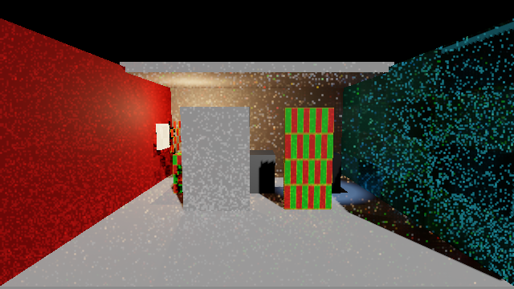
Unity 6000.0.85f1 / URP 17.0.4 / DX12 / RTX 2080 Ti / 640×360 Linear HDR
这组场景加入了实际生效的发光、UV贴图、法线贴图、alpha、多材质、MPB与形变。旧版原始对照见此前同场景对照，未重跑旧版。新场景不能与旧场景直接算版本优劣。
更正：旧场景发光材质被 URP 导入器清除了 _EMISSION；旧关灯段没有实际覆盖发光体采样。原始结果保留，本页使用修正后的独立场景。

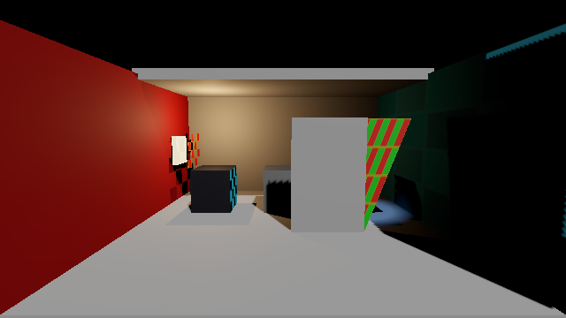
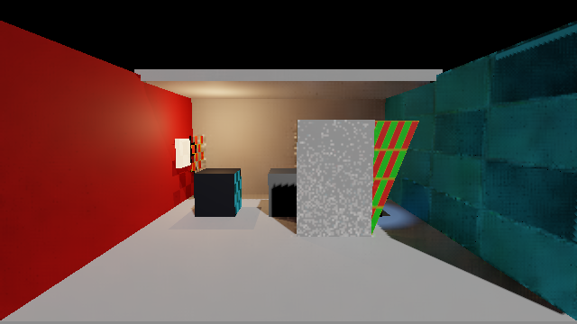
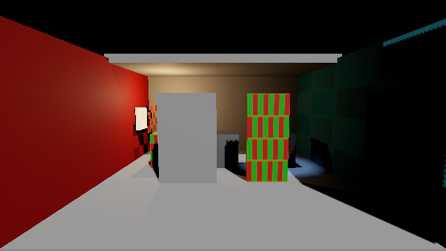
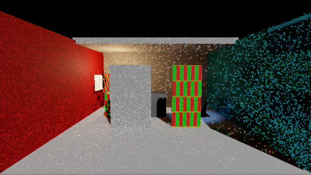
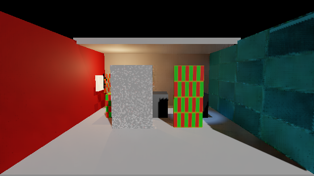
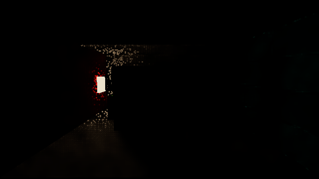
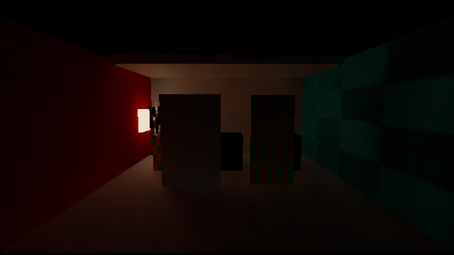
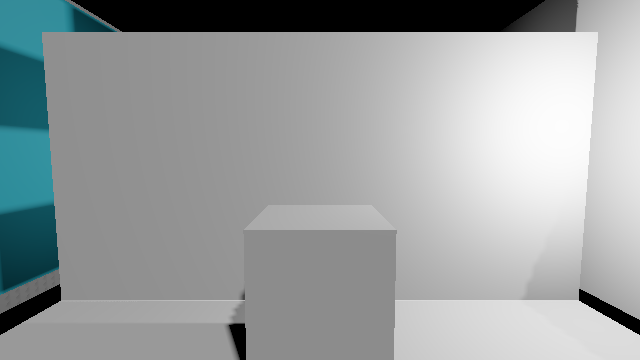
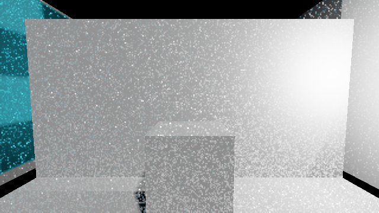
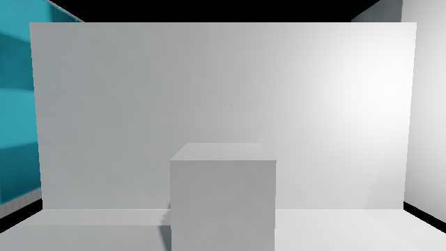
所有图使用相同Reinhard与LinearToGamma映射。未验证GI GPU p95/p99、峰值显存、长时稳定性或所有URP功能组合。
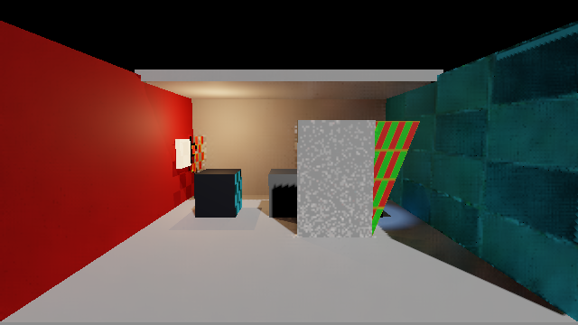
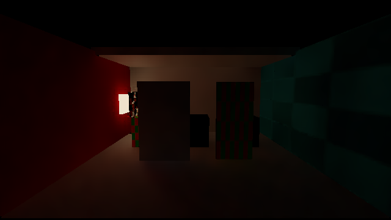
默认Player717帧精确软件，3帧启动回读等待。动态低采样噪点及局部Editor/Player差异仍存在；退出时资源释放警告、性能/显存/长时稳定性未放行。完整范围与文件说明